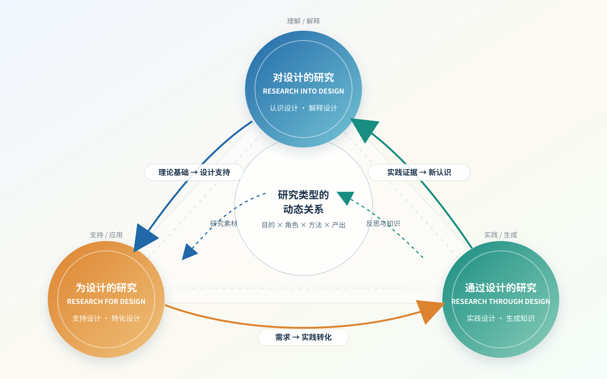

DESIGN RESEARCH ATLAS · 2024—2026
设计研究的三种取向
从“认识设计”到“支持设计”，再到“通过设计生成知识”。这不是一条固定流程，而是一张允许交叉、回流与混合的研究地图。
分类判断看：研究目的 × 设计角色 × 方法 × 产出

01
Into
设计是被解释的对象
02
For
研究为设计决策提供支持
03
Through
设计实践成为知识媒介
01 · ORIENTATION
三种研究类型
先看研究重心，再看具体方法。访谈、原型或用户研究本身不能单独决定分类。
02 · COMPARISON
一张表看清差异
点击列标题可突出对应类型，帮助快速比较研究目的、设计角色和知识产出。
| 比较维度 | Into 对设计 |
For 为设计 |
Through 通过设计 |
|---|
03 · RECENT PAPERS
近两年论文案例
检索范围：Design Studies、International Journal of Design、Design Issues、Leonardo、The Design Journal、CHI、UIST、IJHCS。
04 · BORDER CASE
一篇难以单一归类的论文
分类不是给论文贴死标签，而是说明它在不同研究维度上的重心。
05 · GROUP JUDGEMENT
小组判断方法
同一篇论文可能在目的、对象、过程和产出上呈现不同取向。先确定主分类，再说明交叉特征。
- 01研究目的作者最想理解、支持，还是通过设计生成什么？
- 02设计角色设计是研究对象、应用目标，还是研究媒介？
- 03研究过程是否通过设计实践持续迭代并产生认识？
- 04知识产出最终留下的是理论解释、设计支持，还是实践性新知识？
06 · SOURCES
参考文献与核查入口
点击标题进入 DOI 或期刊页面，核对摘要、方法、章节和结论。